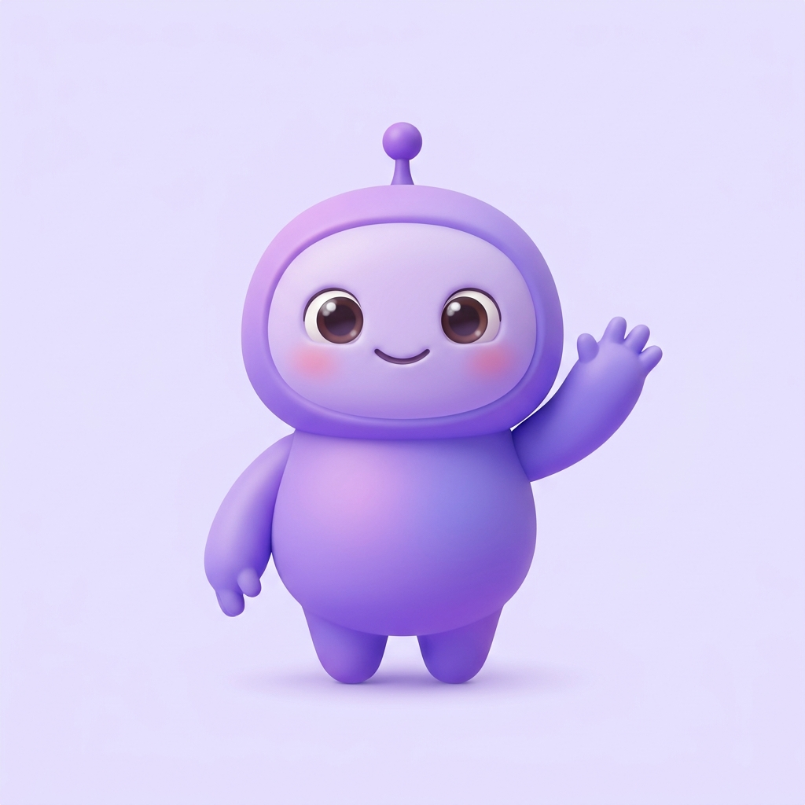

Your world, within reach.
A hands-free, eyes-free AI digital companion built for blind and visually impaired Nigerians — identify Naira notes, read text, understand surroundings, and navigate everyday smartphone tasks just by saying “Anya.”

Everyday independence shouldn't require asking a stranger to count your money or read a private document.
Handling Nigerian Naira notes (classic & redesigned CBN notes) without sight creates daily friction and risk at markets, buses, and shops.
Global voice assistants struggle with Nigerian-accented English, Pidgin, Igbo, and Yoruba — forcing unnatural speech.
Most “accessible” apps still require hunting for small on-screen buttons just to tap a microphone or snap a photo.
Accessibility is the core architecture — not a bolted-on feature.
After a one-time setup, say “Anya” from any screen. ANYA chimes, asks how to help, and executes — zero buttons required.
Understands natural Nigerian English and Nigerian Pidgin (“How much money dey my hand?”) with an extensible language architecture for Igbo & Yoruba.
Hands-free auto-capture camera identifies Naira denominations, describes rooms & objects, reads documents aloud, and guides calls, messaging & banking.
| Feature | Status | What Works Today |
|---|---|---|
| Global “Anya” Wake Companion | Live | Always-on wake listening across every task screen + instant <50ms command routing. |
| Nigerian Naira Detection | Live | Auto-capture camera + Gemini vision identifies ₦5–₦1,000 notes, totals them, & flags unclear photos. |
| Object & Scene Recognition | Live | Answers “What's in front of me?” / “What colour?” with spoken spatial cues. |
| Document & Text Reading | Live | Extracts receipts/labels, summarizes long text, highlights dates/amounts/names, with Stop/Repeat. |
| WhatsApp & Call Voice Agent | Simulated + Handoff | Step-by-step hands-free dialog with confirmation + real wa.me / sms: / tel: launch. |
| Nigerian Banking Accessibility | Simulated | Clearly labeled demo account (₦45,500 balance & transactions) spoken aloud — zero PINs/OTPs. |
Global “Anya” wake engine + gentle audio earcons + hands-free camera countdown.
Core accessibility commands route in <50ms locally with zero cloud stall.
Python + Pydantic strict schemas + Pillow in-memory image prep (zero disk storage).
Multimodal audio, Naira/scene/OCR vision & multi-model failover across Flash models.
React + TypeScript + Tailwind mobile viewport with TTS, Stop/Repeat & High Contrast.
React 19, TypeScript, Vite, Tailwind CSS, React Router, Lucide Icons, Web Speech & Media APIs.
Python, FastAPI, Pydantic, Pillow, Google GenAI SDK (gemini-3.5-flash-lite + auto failover).
Say “Anya” → ANYA chimes & asks: “Yes, I'm here. What would you like me to do?”
Say “How much money dey my hand?” → Auto-opens camera, counts down, speaks total ₦.
Right from Naira screen, say “Anya, what is my account balance?” → Speaks ₦45,500 demo balance.
Say “Anya, send WhatsApp” → “Send Big Sis I am coming home” → Confirms & completes.
Say “Anya, what is in front of me?” or “Read this document” → Auto-captures & speaks.
aria-live regions.True OS-level control inside third-party apps: hands-free WhatsApp voice calls, reading incoming texts, toggling Wi-Fi & real Contacts integration.
Train a custom lightweight YOLOv8 detector on labelled classic + redesigned Naira notes for instant, zero-data offline cash counting.
Fine-tuned speech recognition & natural Nigerian voices for Pidgin, Igbo, Yoruba & Hausa — field-tested with blind users in noisy environments.
Licensed CBN Open Banking / Mono read-only balance narration with biometrics, plus Bluetooth earpiece & haptic framing cues.
Private, confident cash handling and accessible financial literacy for millions of blind and visually impaired Nigerians.
Read prescriptions, receipts, bills, and messages independently — reducing daily reliance on sighted bystanders.
Modular currency & language registry expands cleanly to Ghana Cedis, West African CFA, Hausa, Twi, and Swahili.
ANYA brings voice-first independence to blind and visually impaired people — starting with Nigerian speech, Naira currency, and eyes-free everyday navigation.